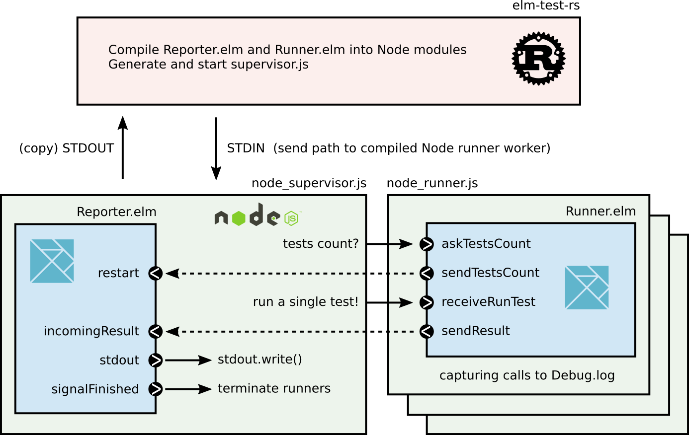

Here it comes, finally, after 9 months of work and a big push in the last few weeks, I am super happy to announce the first beta version of elm-test-rs, a new tests runner for the Elm language. Executables for Linux, MacOS and Windows are available in the assets of the latest release. Special thanks to @harrysarson and @tforgione who have followed along closely and helped me with parts of elm-test-rs!
What is elm-test-rs, why should I care?
Basically, it is an alternative to node-test-runner, which is the library you use when running the elm-test command. This new tests runner brings some cool new features like capturing and reporting calls to Debug.log or filtering of tests based on descriptions and should be easier to maintain, extend and update with new elm versions. Here is the project home.
What are the differences with elm-test?
There are many differences, both on the inside, and the outside.
Let’s make a quick list of all major differences.
- elm-test-rs lets you specify the amount of workers used to run the tests.
- elm-test-rs can capture and report calls to
Debug.login failing tests. - elm-test-rs can filter the tests to run based on their description.
- elm-test-rs lets you choose between an offline mode, or an online mode where it can either pick the newest or oldest compatible versions of dependencies to run the tests, which is convenient for library authors wanting to test dependency lower bounds.
- elm-test-rs is made in Rust mainly, meaning it is fast and a portable executable, it has no npm dependency. It still depends on the elm compiler and Node being installed to run the tests.
- elm-test-rs architecture is simpler and better documented than node-test-runner so it should be easier to maintain, to extend, and to update when a new version of elm is out.
- elm-test-rs is very new and not battle-tested like elm-test, so expect some rough edges. It also only supports the 0.19.1 elm executable, and Node >= 12.
Why did I do this if elm-test already exists?
The origin of this goes back to February of this year (2020), when I was working on the online experience for the Elm track on exercism. In order to let people use the site without having to install anything, there has been a ton of work involving setting up containers and code editors to be able to run user code and report tests failures to the user. At the time, I briefly reported some of the issues I faced in this short post. But one really annoying problem I didn’t manage to solve at the time, was the bad interaction between the presence of Debug.log in student code, and the reports of elm-test. I made an issue about that in node-test-runner.
Unfortunately, back in February, the node-test-runner project was basically on maintenance mode. Some of my issues required big architecture changes, so I decided to go on try re-architecture things in a language I’m more confident in than JavaScript, so I picked Rust for that project. Recently, with the contributions of @harrysarson and @lydell , node-test-runner is alive again, but I was already too deep into elm-test-rs to stop.
Let me know what you think if you try it!
A lot of work and love was put into elm-test-rs, but it is still a beta version, and I’m only able to test Linux locally. So if you are interested in elm-test-rs, give it a try, and let me know if unexpected things happen! To try it, simply download the executable for your system in the latest release assets and run elm-test-rs in one of your Elm projects.
I leave you here with the output of elm-test-rs --help
elm-test-rs
An alternative Elm test runner to node-test-runner
USAGE:
elm-test-rs [<SUBCOMMAND>] [FLAGS] [TESTFILES]
For example:
elm-test-rs tests/*.elm
FLAGS:
--help # Print this message and exit
--version # Print version string and exit
--watch # Rerun tests on file changes
--compiler /path/to/compiler # Precise the compiler to use (defaults to just elm)
--seed integer # Run with initial fuzzer seed (defaults to random)
--fuzz integer # Precise number of iterations of fuzz tests (defaults to 100)
--workers integer # Precise number of worker threads (defaults to number of logic cores)
--filter "substring" # Keep only the tests whose descriptions contain the given string
--report console|json|junit # Print results to stdout in given the format (defaults to console)
--connectivity progressive|offline|online-newest|online-oldest
# Connectivity mode (defaults to progessive)
# offline: elm-test-rs only use installed packages to solve dependencies
# online-newest: the newest compatible dependencies are picked to run tests
# online-oldest: the oldest compatible dependencies are picked to run tests
# progressive: try offline first and if that fails, switch to online-newest
SUBCOMMANDS:
init # Initialize tests dependencies and directory
install [PACKAGES] # Install packages to "test-dependencies" in your elm.json
Complementary note on portability, architecture and performances
If you are interested in the some of the design decisions, architecture choices and implications on performances of elm-test-rs, here are some complementary notes.
The portability requirement of elm-test-rs implies that a few things had to be done differently, impacting the performance profile of elm-test-rs. In particular there are two important steps that are done differently in elm-test-rs and in node-test-runner@0.19.1-revision4.
- Generation of an
elm.jsonfor the main program of the test runner, combining dependencies of the user and of the test runner. - Detecting exposed tests to build the main of the test runner.
For (1), node-test-runner@0.19.1-revision4 is using custom JS code, that is not a full dependency resolution algorithm, and thus causing few dependency issues in some edge cases. To solve that, node-test-runner@master now leverages elm-json as a binary, which makes it a bit longer to npm install but overall brings correct dependency solving at almost no runtime cost since elm-json improved its offline mode. In elm-test-rs, we leverage the pubgrub dependency solver that I presented here few weeks ago, meaning there is no additional installation cost as it’s embedded in the elm-test-rs executable.
For (2), node-test-runner@0.19.1-revision4 is using the elmi-to-json binary, which is a tool to convert the .elmi interface files generated by the elm compiler. This means that an additional preliminary compilation step is required to generate the .elmi files, and then it uses elmi-to-json to extract the exposed tests. Both in node-test-runner@master and in elm-test-rs, we are detecting exposed tests with a new approach. First we parse the tests files to extract “potential” tests values, then, in the generated JavaScript, we embed a kernel-written function check : a -> Maybe Test used to filter all potential tests values with code looking like this:
main : Program Flags Model Msg
main =
[ {{ potential_tests }} ]
|> List.filterMap check
|> Test.concat
|> ...
In practice, this means that we avoid both the preliminary call to the elm compiler, and the call to the elmi-to-json binary. As a result, both node-test-runner@master and elm-test-rs have very similar timing profiles, faster than node-test-runner@0.19.1-revision4.
On my machine, and with my network (which is impacting the elm compiler), here are a few timings obtained for node-test-runner@0.19.1-revision4, node-test-runner@master and elm-test-rs on successive calls. Beware that the first run with a cleared elm-stuff will take additional time with all three tools, due to more things happening within the elm compiler.
| test runner | empty package | empty app | elm-color (8963 tests) |
|---|---|---|---|
node-test-runner@0.19.1-revision4 | 1.8s | 1.4s | 3.4s |
node-test-runner@master | 0.7s | 0.7s | 2.3 s |
elm-test-rs@0.4.0 | 0.6s | 0.6s | 2.8 s |
As you can see, both the upcoming node-test-runner and elm-test-rs are swift to run when there is a small amount of tests. For elm-test-rs, the 600ms of the empty package are roughly divided in 10ms for the preparation Rust code, 300ms for the elm compiler, 300ms to spawn the node supervisor and the worker for the one test present.
The preparation code isn’t the only architectural design difference with node-test-runner. In elm-test-rs, I implemented the simplest system to distribute tests to the runner workers and gather tests results. The supervisor gives a test to a worker. When this one is done with it, it informs the supervisor of the result, and the supervisor gives it a new test to run.

In node-test-runner however, the tests are split in as many groups as workers, and each one runs all the tests of its group and then informs the supervisor of the results. So node-test-runner has a lot less communication going between the supervisor and the runners for work distribution. I believe that’s why it is faster than elm-test-rs when there are plenty of unit tests, such as with elm-color which has 8963 tests. But one advantage of the very simple model of work distribution of elm-test-rs, is that some functionalities like capturing debug logs are almost a one-liner:
let logs = []; // logs is flushed for each test run
process.stdout.write = (str) => logs.push(str);